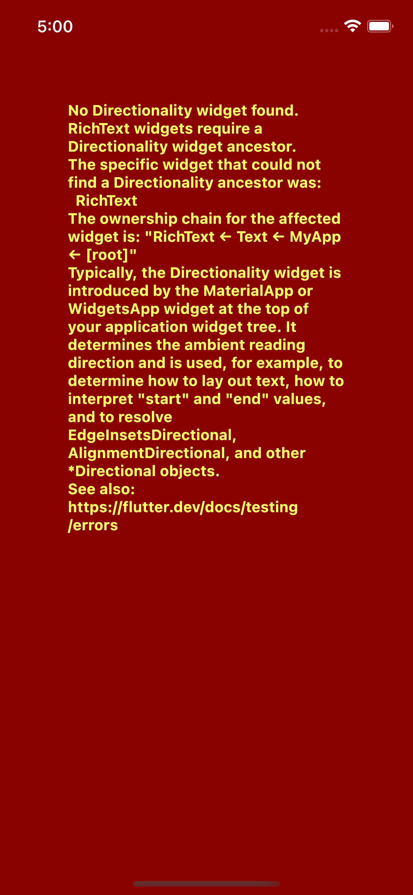

Première application Flutter
- Créer un projet dart à l’aide de la commande
flutter create flutter_hello_world.
Solution
```exercices % flutter create flutter_hello_world
Creating project flutter_hello_world...
flutter_hello_world/test/widget_test.dart (created)
flutter_hello_world/pubspec.yaml (created)
flutter_hello_world/README.md (created)
flutter_hello_world/lib/main.dart (created)
flutter_hello_world/windows/runner/flutter_window.cpp (created)
flutter_hello_world/windows/runner/utils.h (created)
flutter_hello_world/windows/runner/utils.cpp (created)
flutter_hello_world/windows/runner/runner.exe.manifest (created)
flutter_hello_world/windows/runner/CMakeLists.txt (created)
flutter_hello_world/windows/runner/win32_window.h (created)
flutter_hello_world/windows/runner/Runner.rc (created)
flutter_hello_world/windows/runner/win32_window.cpp (created)
flutter_hello_world/windows/runner/resources/app_icon.ico (created)
flutter_hello_world/windows/runner/main.cpp (created)
flutter_hello_world/windows/runner/resource.h (created)
flutter_hello_world/windows/runner/flutter_window.h (created)
flutter_hello_world/windows/flutter/CMakeLists.txt (created)
flutter_hello_world/windows/.gitignore (created)
flutter_hello_world/windows/CMakeLists.txt (created)
flutter_hello_world/ios/Runner.xcworkspace/contents.xcworkspacedata (created)
flutter_hello_world/ios/Runner.xcworkspace/xcshareddata/IDEWorkspaceChecks.pli
st (created)
flutter_hello_world/ios/Runner.xcworkspace/xcshareddata/WorkspaceSettings.xcse
ttings (created)
flutter_hello_world/ios/Runner/Info.plist (created)
flutter_hello_world/ios/Runner/Assets.xcassets/LaunchImage.imageset/LaunchImag
e@2x.png (created)
flutter_hello_world/ios/Runner/Assets.xcassets/LaunchImage.imageset/LaunchImag
e@3x.png (created)
flutter_hello_world/ios/Runner/Assets.xcassets/LaunchImage.imageset/README.md
(created)
flutter_hello_world/ios/Runner/Assets.xcassets/LaunchImage.imageset/Contents.j
son (created)
flutter_hello_world/ios/Runner/Assets.xcassets/LaunchImage.imageset/LaunchImag
e.png (created)
flutter_hello_world/ios/Runner/Assets.xcassets/AppIcon.appiconset/Icon-App-76x
76@2x.png (created)
flutter_hello_world/ios/Runner/Assets.xcassets/AppIcon.appiconset/Icon-App-29x
29@1x.png (created)
flutter_hello_world/ios/Runner/Assets.xcassets/AppIcon.appiconset/Icon-App-40x
40@1x.png (created)
flutter_hello_world/ios/Runner/Assets.xcassets/AppIcon.appiconset/Icon-App-20x
20@1x.png (created)
flutter_hello_world/ios/Runner/Assets.xcassets/AppIcon.appiconset/Icon-App-102
4x1024@1x.png (created)
flutter_hello_world/ios/Runner/Assets.xcassets/AppIcon.appiconset/Icon-App-83.
5x83.5@2x.png (created)
flutter_hello_world/ios/Runner/Assets.xcassets/AppIcon.appiconset/Icon-App-20x
20@3x.png (created)
flutter_hello_world/ios/Runner/Assets.xcassets/AppIcon.appiconset/Contents.jso
n (created)
flutter_hello_world/ios/Runner/Assets.xcassets/AppIcon.appiconset/Icon-App-20x
20@2x.png (created)
flutter_hello_world/ios/Runner/Assets.xcassets/AppIcon.appiconset/Icon-App-29x
29@3x.png (created)
flutter_hello_world/ios/Runner/Assets.xcassets/AppIcon.appiconset/Icon-App-40x
40@2x.png (created)
flutter_hello_world/ios/Runner/Assets.xcassets/AppIcon.appiconset/Icon-App-60x
60@3x.png (created)
flutter_hello_world/ios/Runner/Assets.xcassets/AppIcon.appiconset/Icon-App-60x
60@2x.png (created)
flutter_hello_world/ios/Runner/Assets.xcassets/AppIcon.appiconset/Icon-App-76x
76@1x.png (created)
flutter_hello_world/ios/Runner/Assets.xcassets/AppIcon.appiconset/Icon-App-40x
40@3x.png (created)
flutter_hello_world/ios/Runner/Assets.xcassets/AppIcon.appiconset/Icon-App-29x
29@2x.png (created)
flutter_hello_world/ios/Runner/Base.lproj/LaunchScreen.storyboard (created)
flutter_hello_world/ios/Runner/Base.lproj/Main.storyboard (created)
flutter_hello_world/ios/Runner.xcodeproj/project.xcworkspace/contents.xcworksp
acedata (created)
flutter_hello_world/ios/Runner.xcodeproj/project.xcworkspace/xcshareddata/IDEW
orkspaceChecks.plist (created)
flutter_hello_world/ios/Runner.xcodeproj/project.xcworkspace/xcshareddata/Work
spaceSettings.xcsettings (created)
flutter_hello_world/ios/Runner.xcodeproj/xcshareddata/xcschemes/Runner.xcschem
e (created)
flutter_hello_world/ios/Flutter/Debug.xcconfig (created)
flutter_hello_world/ios/Flutter/Release.xcconfig (created)
flutter_hello_world/ios/Flutter/AppFrameworkInfo.plist (created)
flutter_hello_world/ios/.gitignore (created)
flutter_hello_world/flutter_hello_world.iml (created)
flutter_hello_world/.gitignore (created)
flutter_hello_world/web/favicon.png (created)
flutter_hello_world/web/index.html (created)
flutter_hello_world/web/manifest.json (created)
flutter_hello_world/web/icons/Icon-maskable-512.png (created)
flutter_hello_world/web/icons/Icon-192.png (created)
flutter_hello_world/web/icons/Icon-maskable-192.png (created)
flutter_hello_world/web/icons/Icon-512.png (created)
flutter_hello_world/.metadata (created)
flutter_hello_world/macos/Runner.xcworkspace/contents.xcworkspacedata
(created)
flutter_hello_world/macos/Runner.xcworkspace/xcshareddata/IDEWorkspaceChecks.p
list (created)
flutter_hello_world/macos/Runner/Assets.xcassets/AppIcon.appiconset/app_icon_1
6.png (created)
flutter_hello_world/macos/Runner/Assets.xcassets/AppIcon.appiconset/app_icon_1
024.png (created)
flutter_hello_world/macos/Runner/Assets.xcassets/AppIcon.appiconset/app_icon_2
56.png (created)
flutter_hello_world/macos/Runner/Assets.xcassets/AppIcon.appiconset/app_icon_6
4.png (created)
flutter_hello_world/macos/Runner/Assets.xcassets/AppIcon.appiconset/app_icon_5
12.png (created)
flutter_hello_world/macos/Runner/Assets.xcassets/AppIcon.appiconset/app_icon_1
28.png (created)
flutter_hello_world/macos/Runner/Assets.xcassets/AppIcon.appiconset/Contents.j
son (created)
flutter_hello_world/macos/Runner/Assets.xcassets/AppIcon.appiconset/app_icon_3
2.png (created)
flutter_hello_world/macos/Runner/DebugProfile.entitlements (created)
flutter_hello_world/macos/Runner/Base.lproj/MainMenu.xib (created)
flutter_hello_world/macos/Runner/MainFlutterWindow.swift (created)
flutter_hello_world/macos/Runner/Configs/Debug.xcconfig (created)
flutter_hello_world/macos/Runner/Configs/Release.xcconfig (created)
flutter_hello_world/macos/Runner/Configs/Warnings.xcconfig (created)
flutter_hello_world/macos/Runner/Configs/AppInfo.xcconfig (created)
flutter_hello_world/macos/Runner/AppDelegate.swift (created)
flutter_hello_world/macos/Runner/Info.plist (created)
flutter_hello_world/macos/Runner/Release.entitlements (created)
flutter_hello_world/macos/Runner.xcodeproj/project.xcworkspace/xcshareddata/ID
EWorkspaceChecks.plist (created)
flutter_hello_world/macos/Runner.xcodeproj/project.pbxproj (created)
flutter_hello_world/macos/Runner.xcodeproj/xcshareddata/xcschemes/Runner.xcsch
eme (created)
flutter_hello_world/macos/Flutter/Flutter-Debug.xcconfig (created)
flutter_hello_world/macos/Flutter/Flutter-Release.xcconfig (created)
flutter_hello_world/macos/.gitignore (created)
flutter_hello_world/android/app/src/profile/AndroidManifest.xml (created)
flutter_hello_world/android/app/src/main/res/mipmap-mdpi/ic_launcher.png
(created)
flutter_hello_world/android/app/src/main/res/mipmap-hdpi/ic_launcher.png
(created)
flutter_hello_world/android/app/src/main/res/drawable/launch_background.xml
(created)
flutter_hello_world/android/app/src/main/res/mipmap-xxxhdpi/ic_launcher.png
(created)
flutter_hello_world/android/app/src/main/res/mipmap-xxhdpi/ic_launcher.png
(created)
flutter_hello_world/android/app/src/main/res/values-night/styles.xml (created)
flutter_hello_world/android/app/src/main/res/values/styles.xml (created)
flutter_hello_world/android/app/src/main/res/drawable-v21/launch_background.xm
l (created)
flutter_hello_world/android/app/src/main/res/mipmap-xhdpi/ic_launcher.png
(created)
flutter_hello_world/android/app/src/main/AndroidManifest.xml (created)
flutter_hello_world/android/app/src/debug/AndroidManifest.xml (created)
flutter_hello_world/android/gradle/wrapper/gradle-wrapper.properties (created)
flutter_hello_world/android/gradle.properties (created)
flutter_hello_world/android/.gitignore (created)
flutter_hello_world/android/settings.gradle (created)
flutter_hello_world/android/app/build.gradle (created)
flutter_hello_world/android/app/src/main/kotlin/com/example/flutter_hello_worl
d/MainActivity.kt (created)
flutter_hello_world/android/build.gradle (created)
flutter_hello_world/android/flutter_hello_world_android.iml (created)
flutter_hello_world/ios/Runner/Runner-Bridging-Header.h (created)
flutter_hello_world/ios/Runner/AppDelegate.swift (created)
flutter_hello_world/ios/Runner.xcodeproj/project.pbxproj (created)
flutter_hello_world/analysis_options.yaml (created)
flutter_hello_world/.idea/runConfigurations/main_dart.xml (created)
flutter_hello_world/.idea/libraries/Dart_SDK.xml (created)
flutter_hello_world/.idea/libraries/KotlinJavaRuntime.xml (created)
flutter_hello_world/.idea/modules.xml (created)
flutter_hello_world/.idea/workspace.xml (created)
flutter_hello_world/linux/main.cc (created)
flutter_hello_world/linux/my_application.h (created)
flutter_hello_world/linux/my_application.cc (created)
flutter_hello_world/linux/flutter/CMakeLists.txt (created)
flutter_hello_world/linux/.gitignore (created)
flutter_hello_world/linux/CMakeLists.txt (created)
Running "flutter pub get" in flutter_hello_world... 1 162ms
Wrote 128 files.
All done!
In order to run your application, type:
$ cd flutter_hello_world
$ flutter run
Your application code is in flutter_hello_world/lib/main.dart.
Désormais, examinons la structure du projet.
flutter_hello_world/
┣ .dart_tool/
┣ .idea/
┣ android/ # Android project
┣ ios/ # iOS project
┣ lib/ # Flutter sources
┣ test/ # Test folder
┣ .gitignore
┣ .metadata
┣ .packages
┣ README.md
┣ analysis_options.yaml
┣ flutter_hello_world.iml
┣ pubspec.lock
┗ pubspec.yaml
Par rapport à un projet dart, on observe l’ajout de deux dossiers supplémentaires ios,android, chacun contenant respectivement les sources d’un véritable projet iOS/Android. Les sources spécifiques à chaque plateforme sont accessibles et peuvent être éditées (configuration du splashcreen, icônes, permissions, …).
- Ouvrir le fichier
main.dartsitué dans le dossierlib
import 'package:flutter/material.dart';
void main() {
runApp(const MyApp());
}
Comme tout programme dart, la méthode main est déclarée.
Celle-ci appelle la méthode runApp provenant du package flutter/material.dart et servant à afficher à l’écran le widget passé en paramètre.
- Exécuter l’application sur la plateforme de son choix à l’aide de la commande
flutter runou à l’aide de l’IDE

- Supprimer tout le contenu du fichier
main.dartet le remplacer par le contenu suivant :
// Copyright 2018 The Flutter team. All rights reserved.
// Use of this source code is governed by a BSD-style license that can be
// found in the LICENSE file.
import 'package:flutter/material.dart';
void main() => runApp(MyApp());
class MyApp extends StatelessWidget {
@override
Widget build(BuildContext context) {
return // TODO
}
}
- Dans la méthode
build(), retourner un widgetText("Hello world!")et exécuter l’application.
Solution
üî• üî• üî• PANIC ! L‚Äôapplication flutter plante. C'est totalement normal, nous n'avons pas d√©fini de contexte dans l'arbre des widgets √† l'application.

- Suivons le message d'erreur, rajoutons un
WidgetAppen tant que parent de notreText.
Astuce
Ne pas hésiter à s'aider de l'aide contextuelle de l'IDE, il existe un raccourcis très pratique pour wrapper des widgets.

Solution
@override
Widget build(BuildContext context) {
return WidgetsApp(
color: Colors.white, builder: (_, __) => Text("Hello world!"));
}
- Centrons le texte à l'aide du widget
Center
Solution
Ne pas hésiter à s'aider de l'aide contextuelle de l'IDE, il existe un raccourcis très pratique pour wrapper des widgets.
@override
Widget build(BuildContext context) {
return WidgetsApp(
color: Colors.black,
builder: (_, __) => Center(child: Text("Hello world!")));
}
- Exercice complet
Solution complète
// Copyright 2018 The Flutter team. All rights reserved.
// Use of this source code is governed by a BSD-style license that can be
// found in the LICENSE file.
import 'package:flutter/material.dart';
void main() => runApp(MyApp());
class MyApp extends StatelessWidget {
@override
Widget build(BuildContext context) {
return WidgetsApp(
color: Colors.black,
builder: (_, __) => Center(child: Text("Hello world!")));
}
}